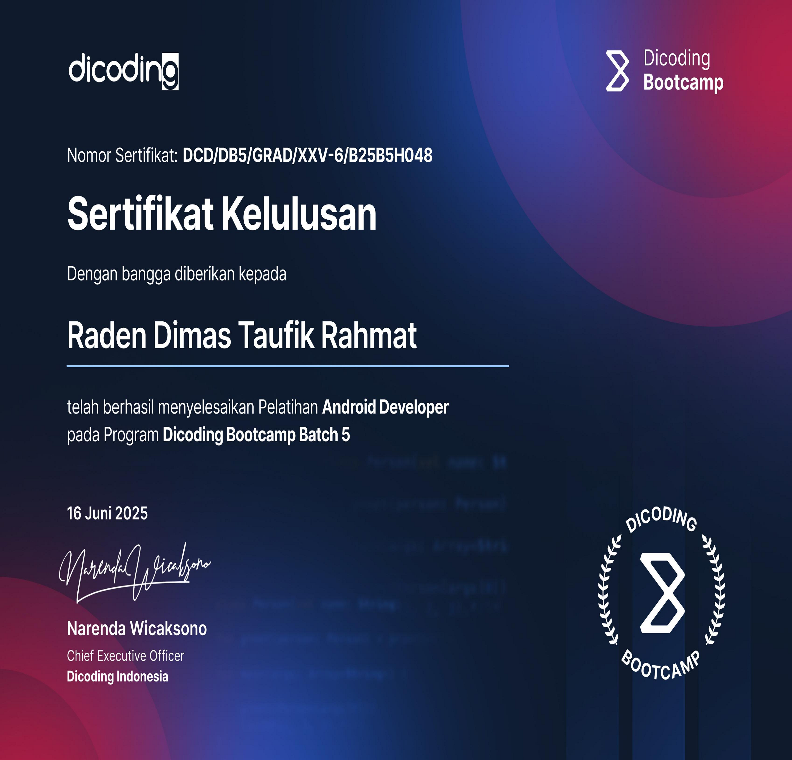
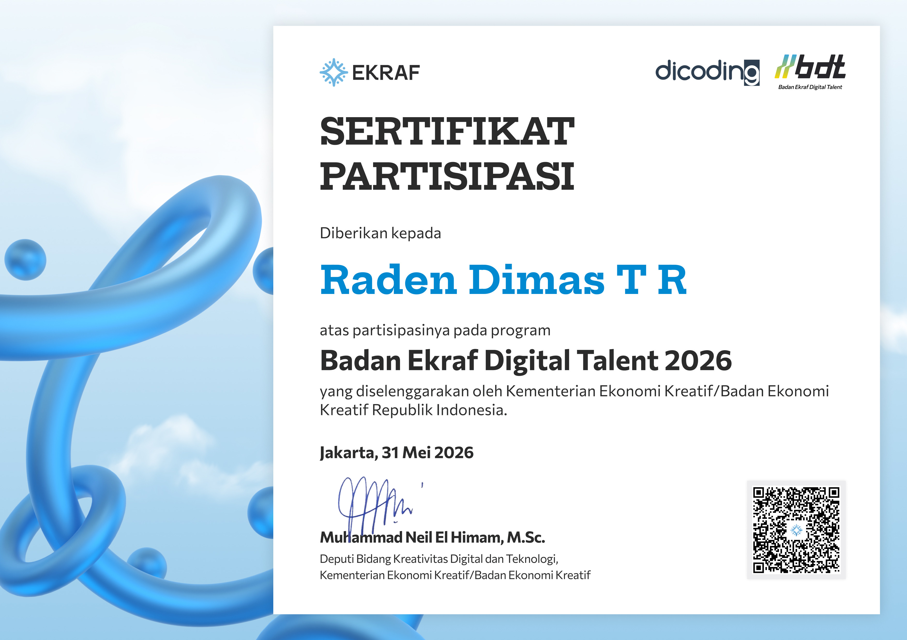
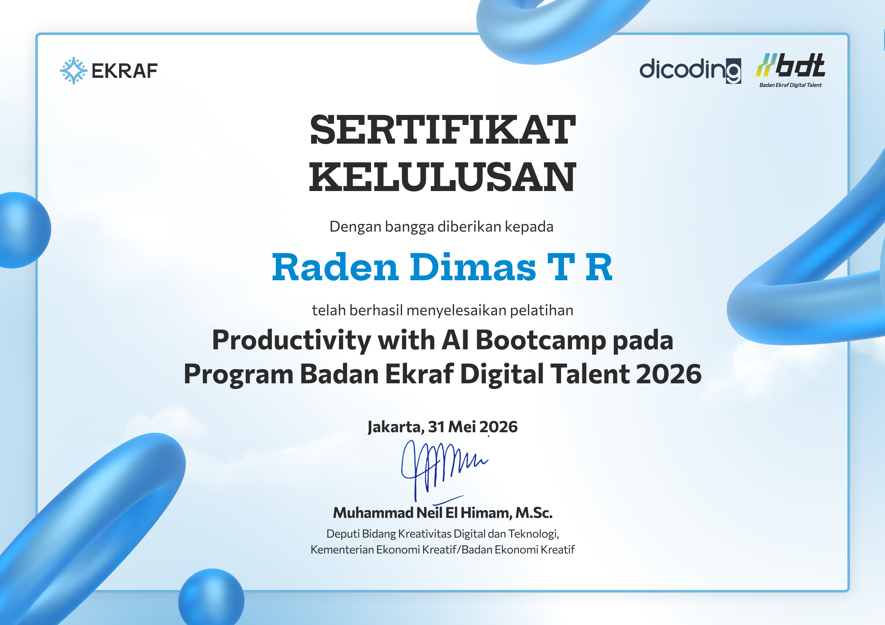
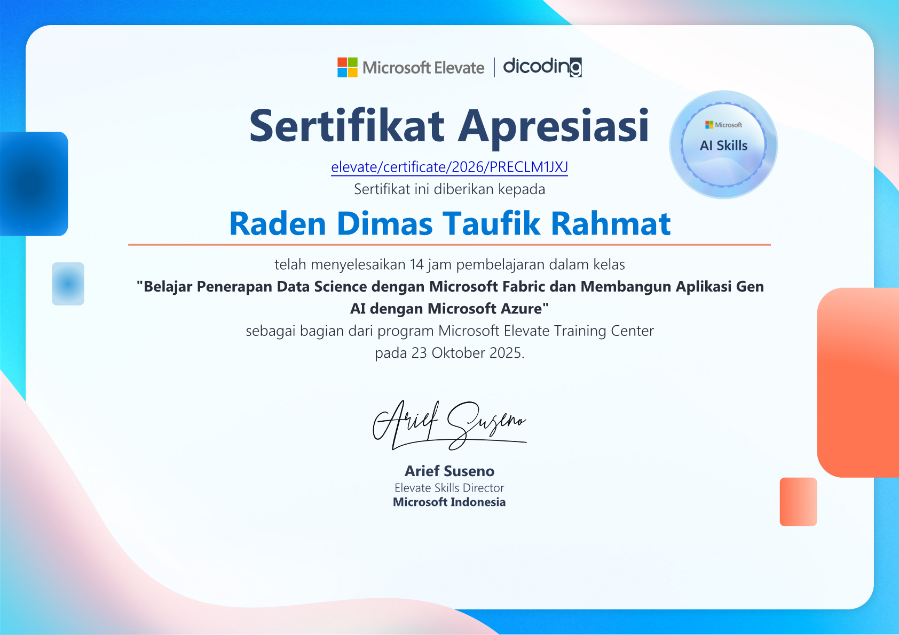
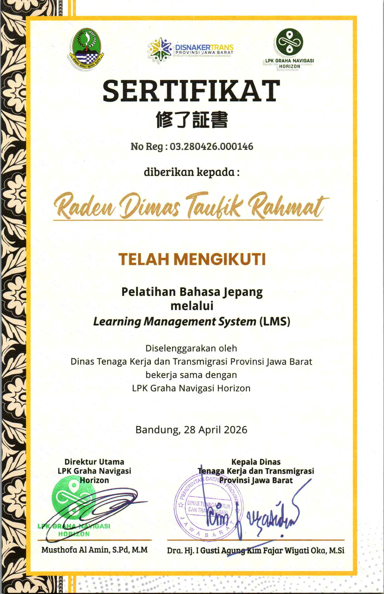
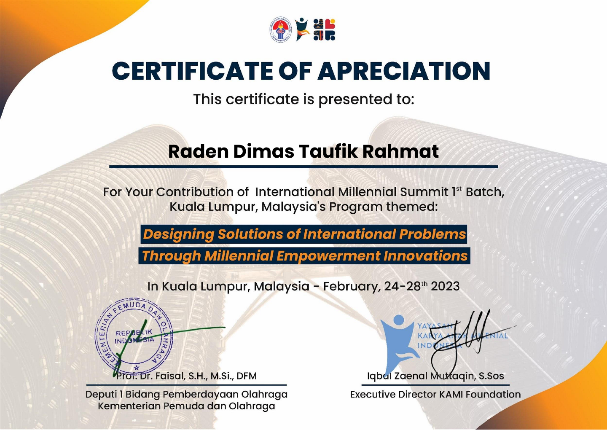

Pembelajaran di luar pendidikan formal
Credentials ditampilkan terpisah dari pendidikan formal. Koleksi ini mencakup mobile development, data dan AI, pendidikan, bahasa, serta kegiatan internasional.
Menampilkan 9 credentials
Bangkit Mobile Development
Bangkit 2024 Batch 2 — Mobile Development
Bangkit Academy — program yang dipimpin Google dengan dukungan GoTo dan Traveloka
Periode –; sertifikat .
Program intensif Kotlin, Android, dasar AI, machine learning untuk Android, capstone project, dan pengembangan soft skill.
912 jam pembelajaran

Dicoding Bootcamp Batch 5 — Android Developer
Dicoding Indonesia
Lulus
Program Android Developer yang mencakup pemrograman, Git dan GitHub, Kotlin, Android fundamental, Jetpack Compose, SOLID, capstone project, soft skill, dan career development.
901 jam pembelajaran

Badan Ekraf Digital Talent 2026
Kementerian Ekonomi Kreatif/Badan Ekonomi Kreatif Republik Indonesia bersama Dicoding
Sertifikat partisipasi dalam Program Badan Ekraf Digital Talent 2026.

Productivity with AI Bootcamp
Program Badan Ekraf Digital Talent 2026
Kementerian Ekonomi Kreatif/Badan Ekonomi Kreatif Republik Indonesia bersama Dicoding
Pelatihan yang berfokus pada pemanfaatan AI untuk mendukung produktivitas.

Data Science dengan Microsoft Fabric dan Generative AI dengan Microsoft Azure
Microsoft Elevate dan Dicoding
Penerapan data science menggunakan Microsoft Fabric dan pengembangan aplikasi Generative AI menggunakan Microsoft Azure.
14 jam pembelajaran
Google Certified Educator
Google Certified Educator Level 1
Google for Education
Diterbitkan ; berlaku hingga .
Sertifikasi yang memvalidasi keterampilan dasar dalam menggunakan alat Google untuk mendukung pembelajaran dan penerapan teknologi pendidikan.
Gemini Certified Student
Siswa Tersertifikasi Gemini — Universitas
Gemini Certified Student — University
Google for Education
Diterbitkan ; berlaku hingga .
Sertifikasi tentang konsep AI generatif serta fitur dan kemampuan inti Gemini dalam konteks pendidikan.

Pelatihan Bahasa Jepang melalui LMS
Program AKIRA 5
Dinas Tenaga Kerja dan Transmigrasi Provinsi Jawa Barat bersama LPK Graha Navigasi Horizon
Pelatihan Bahasa Jepang yang diselenggarakan melalui Learning Management System.

International Millennial Summit — 1st Batch
International Millennial Summit
Kuala Lumpur, Malaysia; –
Tema: Designing Solutions of International Problems Through Millennial Empowerment Innovations
Penghargaan atas kontribusi dalam International Millennial Summit 1st Batch.
Credential belum ditemukan
Pilih kategori lain untuk melihat credential yang tersedia.
Verifikasi dan privasi
Tautan verifikasi hanya ditampilkan ketika telah dikonfirmasi. Dokumen yang memuat identitas atau data pendidikan yang tidak relevan diganti dengan visual fallback.